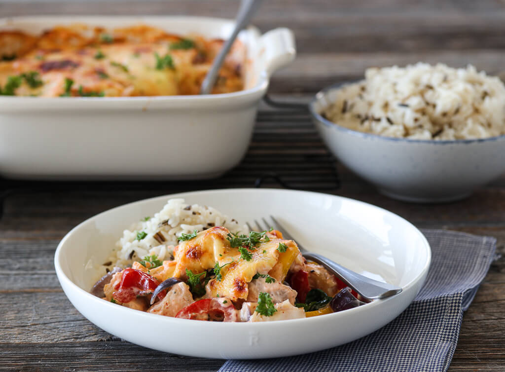

Cod with Bell Peppers and Chili Sauce

500-600 gcod (or salmon)1red onion, sliced3large garlic cloves minced2-3bell peppers (red, yellow), sliced80 gspinach10cherry tomatoes, halved1¼ cupheavy cream, crème fraîche (300 ml)2 tspSriracha100 gshredded cheese- salt and pepper to taste
- lemon slices, cilantro, parsley, or basil for garnish
Preheat the oven at 400 degrees.
Slice the vegetables and cut the fish into smaller pieces (sprinkle with salt to taste).
In a large sauté pan or skillet, heat the olive oil over medium heat. Add the onion and cook for 4 minutes, until soft. Add the bell peppers and garlic, cook for a few more minutes.
Add the spinach and tomatoes, season to taste with salt and pepper. Cook for a few minutes. Then transfer to a baking dish and arrange the fish pieces on top.
Add the heavy cream and crème fraîche to the pan and heat up until right before boiling point. Add the Sriracha and season with salt and pepper.
Add the sauce to the baking form and sprinkle the cheese on top. Transfer to oven for 20-25 minutes, until the cheese is lightly brown.
When done, take it out of the oven and let it sit for 5-10 minutes before serving. Garnish with cilantro, parsley or basil and a bit of lemon. Server with rice or potatoes on the side.